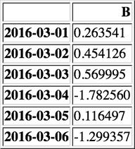

Pandas
| Author | Hao Ruan (haoru@cisco.com) |
| Date | 2018-02-16 22:57:57 |
1 Series
Series 对象可以理解为一维数组
s = pd.Series([1, 3, 5, np.nan, 6, 8]) log("s", s)
====================================== s ======================================= 0 1.0 1 3.0 2 5.0 3 NaN 4 6.0 5 8.0 dtype: float64
2 DataFrame
DataFrame 对象可以理解为二维数组， 本质上 DataFrame 是对 Numpy array 的封装 。
DataFrame 中每一行 / 列是由一个 Series 对象组成的 。
2.1 创建
2.1.1 使用字典创建
key 为 DataFrame 的列；value 为对应列下的值
df = pd.DataFrame({ 'A': 1, 'B': pd.Timestamp('20160301'), 'C': range(4), 'D': np.arange(5, 9), 'E': 'text', 'F': ['AA', 'BB', 'CC', 'DD']}) show_dataframe(df)
2.1.2 指定行列索引创建
dates = pd.date_range('20160301', periods=6) log("dates", dates)
==================================== dates =====================================
DatetimeIndex(['2016-03-01', '2016-03-02', '2016-03-03', '2016-03-04',
'2016-03-05', '2016-03-06'],
dtype='datetime64[ns]', freq='D')
df = pd.DataFrame(np.random.randn(6,4), index=dates, columns=list('ABCD')) show_dataframe(df)
2.2 查看数据
2.2.1 维度
log("df.shape", df.shape)
=================================== df.shape =================================== (6, 4)
2.2.2 行索引信息
log("df.index", df.index)
=================================== df.index ===================================
DatetimeIndex(['2016-03-01', '2016-03-02', '2016-03-03', '2016-03-04',
'2016-03-05', '2016-03-06'],
dtype='datetime64[ns]', freq='D')
2.2.3 列索引信息
log("df.columns", df.columns)
================================== df.columns ================================== Index(['A', 'B', 'C', 'D'], dtype='object')
2.2.4 底层数据
log("df.values", df.values) log("type(df.values)", type(df.values))
================================== df.values =================================== [[-1.25125359 0.2635407 3.26002078 0.81661338] [-1.0231705 0.45412576 -1.54108404 -1.08147038] [-0.01286819 0.56999452 2.46063294 1.34982898] [ 0.35142309 -1.78255994 -0.68435815 -2.29981174] [ 0.24063717 0.11649655 -0.45423074 -0.94044457] [-0.27633016 -1.29935719 1.18071339 1.04504599]] =============================== type(df.values) ================================ <class 'numpy.ndarray'>
2.2.5 列类型
log("df.dtypes", df.dtypes)
================================== df.dtypes =================================== A float64 B float64 C float64 D float64 dtype: object
2.2.6 head
默认返回前五行
show_dataframe(df.head(3))
2.2.7 tail
默认返回最后五行
show_dataframe(df.tail(3))
2.2.8 统计信息
show_dataframe(df.describe())
2.3 排序
2.3.1 按列索引排序
show_dataframe(df.sort_index(axis=1, ascending=False))
2.3.2 按列数据排序
show_dataframe(df.sort_values(by='C'))
2.4 数据选择
使用基于标签的 loc 函数选择数据效率较高。
2.4.1 列数据（Series 类型对象）
log("df['A']", df['A']) # 等效于 df.A log("df.iloc[0]", df.iloc[0])
=================================== df['A'] ==================================== 2016-03-01 -1.251254 2016-03-02 -1.023170 2016-03-03 -0.012868 2016-03-04 0.351423 2016-03-05 0.240637 2016-03-06 -0.276330 Freq: D, Name: A, dtype: float64 ================================== df.iloc[0] ================================== A -1.251254 B 0.263541 C 3.260021 D 0.816613 Name: 2016-03-01 00:00:00, dtype: float64
2.4.2 列数据（DataFrame 类型对象）
show_dataframe(df.loc[:, ['A', 'B']])
show_dataframe(df.iloc[:, 1:2])

2.4.3 行数据（Series 类型对象）
log("df.loc['20160301']", df.loc['20160301']) log("df.iloc[0]", df.iloc[0])
============================== df.loc['20160301'] ============================== A -1.251254 B 0.263541 C 3.260021 D 0.816613 Name: 2016-03-01 00:00:00, dtype: float64 ================================== df.iloc[0] ================================== A -1.251254 B 0.263541 C 3.260021 D 0.816613 Name: 2016-03-01 00:00:00, dtype: float64
2.4.4 行数据（DataFrame 类型对象）
show_dataframe(df[2:4])
show_dataframe(df['20160302':'20160305'])
show_dataframe(df.iloc[1:3])
2.4.5 选择行与列
show_dataframe(df.loc['20160301':'20160305', ['A', 'B']])
show_dataframe(df.iloc[1:3, 2:4])
2.4.6 选择指定坐标
log("df.loc['2016-03-01', 'A']", df.loc['2016-03-01', 'A']) log("df.at[pd.Timestamp('2016-03-01'), 'A']", df.at[pd.Timestamp('2016-03-01'), 'A']) # df.at['2016-03-01', 'A'] will raise error log("df.iloc[1, 1]", df.iloc[1, 1]) log("df.iat[1, 1]", df.iat[1, 1])
========================== df.loc['2016-03-01', 'A'] ===========================
-1.2512535946130614
==================== df.at[pd.Timestamp('2016-03-01'), 'A'] ====================
-1.2512535946130614
================================ df.iloc[1, 1] =================================
0.4541257552911061
================================= df.iat[1, 1] =================================
0.4541257552911061
2.4.7 布尔选择
show_dataframe(df[df.A < 0])
show_dataframe(df[df > 0])
2.5 数据修改
2.5.1 增加列
s = pd.Series(np.arange(6), index=pd.date_range('20160301', periods=6)) df['E'] = s show_dataframe(df)
2.5.2 修改列
df.loc[:, 'A'] = np.arange(10, 16) show_dataframe(df)
2.5.3 修改指定坐标
df.loc['20160301', 'A'] = 0.2 df.at[pd.Timestamp('20160301'), 'A'] = 0.4 df.iat[0, 0] = 0.6 show_dataframe(df)
2.5.4 整体赋值
df2 = df.loc[:, ['B', 'C']].copy() df2[df2 > 0] = -df2 show_dataframe(df2)